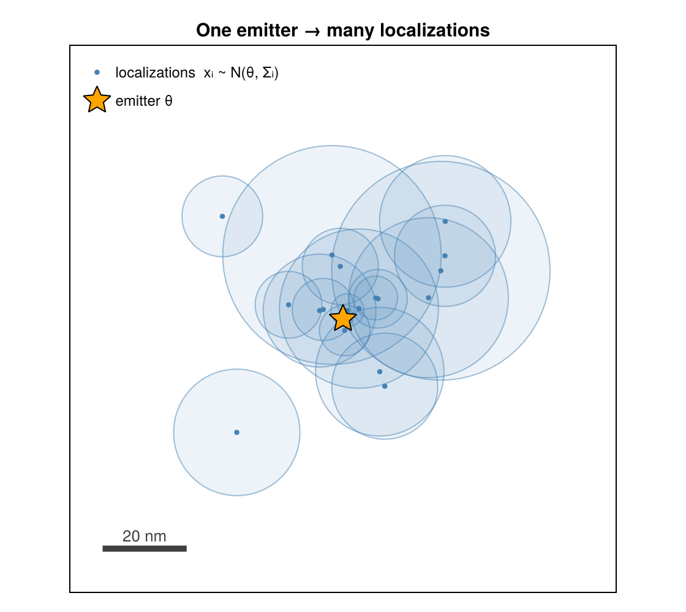
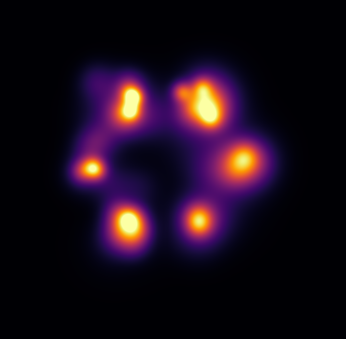
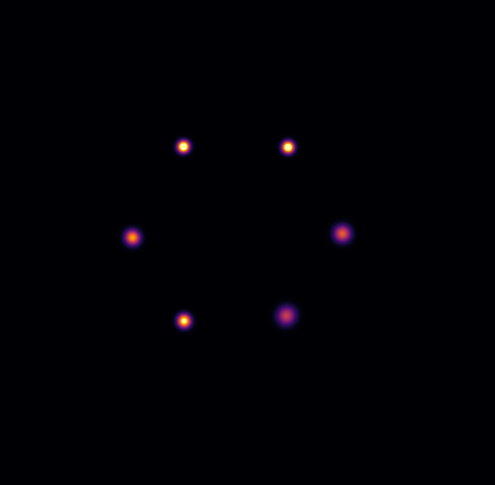
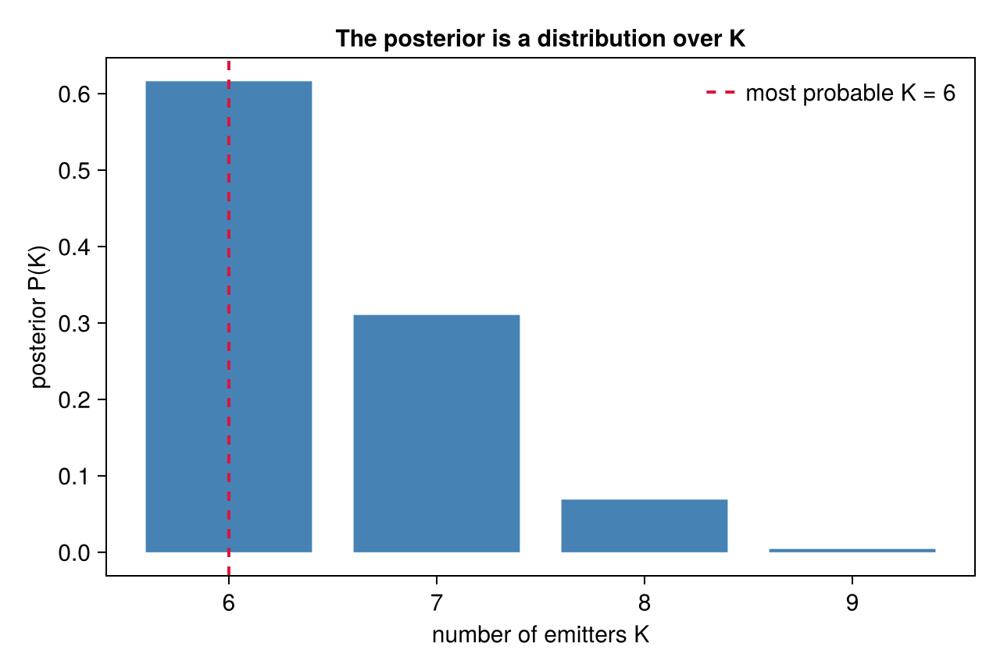

Mathematics: Overview
This section is a detailed, code-grounded breakdown of the model and sampler. Each page states the mathematics as implemented in the source and cites the file that computes it. Read it top to bottom for the full derivation, or jump to a single concept:
- Collapsed Representation — state = allocation; positions integrated out.
- Spatial Models & Marginal Likelihood — flat vs. locmix; the marginal.
- Priors — allocation (DM), count (NegBin), and the K prior.
- The Sampler: Moves — Gibbs sweep, split/merge, birth/death, acceptance.
- Hierarchical Learning — learning $\mu$, shape, and $\rho$.
- MAP-N Estimation — Dahl consensus and overlap-Hungarian pooling.
- Large-Dataset Partitioning — precision-weighted DBSCAN, dedup.
- Uncertainty Correction — the $\tau$ finder.
- localization — one blinking event's fitted position, with its own uncertainty.
- emitter — a true fluorophore; BaGoL groups many localizations into one emitter.
- allocation $\mathbf{z}$ — which emitter each localization is assigned to.
- $K$ — the number of emitters (unknown, inferred).
- collapsed — the emitter positions are integrated out analytically, so the sampler moves only over the discrete allocation.
- marginal likelihood — the score of a cluster with its emitter position integrated out.
- RJMCMC — reversible-jump MCMC; the moves that change $K$.
- MAP-N — the point summary: the most probable $K$ plus a representative grouping.
- PSM — posterior similarity matrix: how often two localizations share an emitter.
- DM / NegBin / locmix — the allocation prior, the blink-count model, the spatial prior.
- Dahl / Hungarian / METIS — consensus partition / optimal matching / graph partitioner.
- Rao-Blackwellized — variance reduced by handling a quantity exactly instead of sampling.
Notation
| Symbol | Meaning |
|---|---|
| $\mathbf{x}_i \in \mathbb{R}^D$ | observed position of localization $i$ ($D = 2$ standard) |
| $\Sigma_i,\ \Lambda_i = \Sigma_i^{-1}$ | reported covariance and precision of localization $i$ |
| $z_i$ | allocation: which emitter produced localization $i$ |
| $K$ | number of emitters (clusters) |
| $n_k$ | number of localizations assigned to emitter $k$ |
| $N = \sum_k n_k$ | total number of localizations |
| $\boldsymbol{\theta}_k$ | position of emitter $k$ (integrated out in the sampler) |
| $\mu,\ \alpha$ | count-distribution mean and shape (shape) |
| $\gamma$ | DM partition-prior concentration ($= \alpha$ by default) |
| $A$ | area of the spatial region |
All positions and uncertainties are in micrometers (μm).
The inference problem
A field of view contains $K$ emitters at unknown positions $\boldsymbol{\theta}_1, \dots, \boldsymbol{\theta}_K$. Each emitter $k$ blinks a random number of times $n_k$, and each blink produces one localization drawn around the emitter with its reported uncertainty. Writing $z_i \in \{1, \dots, K\}$ for the allocation — which emitter produced localization $i$ — the generative model is
\[K \sim \text{(count prior)}, \qquad \boldsymbol{\theta}_k \sim \text{(spatial prior)}, \qquad \mathbf{x}_i \mid z_i = k,\ \boldsymbol{\theta}_k \;\sim\; \mathcal{N}(\boldsymbol{\theta}_k,\ \Sigma_i).\]
Both $K$ and the allocation $\mathbf{z}$ are unknown, and so are the pooled positions $\boldsymbol{\theta}_k$. BaGoL infers the joint posterior $p(K, \mathbf{z}, \boldsymbol{\theta} \mid \mathbf{x})$ by MCMC, then summarizes it.

A single emitter (orange star) blinks repeatedly, scattering localizations (blue points), each with its own uncertainty disc $\Sigma_i$. BaGoL inverts this — the cloud back to the emitter.
Rather than committing to one grouping, BaGoL builds a full posterior over both the number of emitters and their positions, and summarizes it with the MAP-N estimate (the most probable count plus a representative grouping). Pooling the localizations of each emitter yields a position more precise than any single localization — the super-resolution gain.


Top: Gaussian render of the raw localizations of a simulated hexamer (a blur). Bottom: the BaGoL MAP-N result at the same scale — six resolved emitters. Pipeline: simulate_nmer → run_bagol → render_report.
Bayesian inference in brief
If you are new to Bayesian methods, here is the main idea. A prior encodes what is plausible before seeing the data — how many emitters, how they blink. The likelihood says how probable the observed localizations are for a given arrangement of emitters. Bayes' rule multiplies them into the posterior — what remains plausible after combining the model with the data:
\[\underbrace{p(K, \mathbf{z} \mid \mathbf{x})}_{\text{posterior}} \;\propto\; \underbrace{p(\mathbf{x} \mid K, \mathbf{z})}_{\text{likelihood}} \;\times\; \underbrace{p(K, \mathbf{z})}_{\text{prior}} .\]
In the schematic above the per-emitter positions $\boldsymbol{\theta}$ are integrated out of the likelihood (the collapsing trick described below) and recovered analytically for reporting — so the grouping moves explore only the discrete $(K, \mathbf{z})$. The blink parameters $\mu, \alpha$ are not integrated out; they are learned as shared hyperparameters, updated alongside the grouping (see Hierarchical Learning).
This posterior cannot be normalized or exhaustively maximized directly — the number of ways to group localizations into emitters is enormous. So BaGoL samples it: the MCMC sampler visits groupings in proportion to their posterior probability. The result is therefore not a single answer but a distribution — for instance a full posterior over the number of emitters $K$, from which we read both the most probable count and how much to trust it.

The sampler returns a posterior $P(K)$ over the emitter count, not just one number. The most probable count (dashed, here $K = 6$) is its peak — the count MAP-N reports; a broad distribution means the data leave $K$ genuinely uncertain, something a single point estimate would hide.
How BaGoL samples it: collapsed RJMCMC
Standard MCMC walks around a fixed set of parameters — it has no move that adds or deletes one. But counting emitters needs exactly that. The target posterior $p(K, \mathbf{z}, \boldsymbol{\theta} \mid \mathbf{x})$ lives in a space whose dimension changes with $K$ — every emitter adds a position $\boldsymbol{\theta}_k$. Ordinary MCMC cannot move between models with different numbers of parameters; reversible-jump MCMC (RJMCMC) is the extension that can. Its dimension-changing moves — split one cluster into two, merge two into one, give birth to a new emitter, remove an empty one — propose a jump $K \to K \pm 1$ and accept it with a Metropolis–Hastings ratio constructed so the chain's stationary distribution is the target posterior. (The moves are detailed on The Sampler: Moves.)
BaGoL integrates the emitter positions $\boldsymbol{\theta}_k$ out analytically. A collection of localizations assigned to one emitter has a closed-form Gaussian posterior for that emitter's position — the conjugate product of the localizations' own Gaussians:
\[p\big(\boldsymbol{\theta}_k \mid \{\mathbf{x}_i : z_i = k\}\big) = \mathcal{N}\!\big(\boldsymbol{\theta}_k;\ \hat{\boldsymbol{\theta}}_k,\ \Lambda_k^{-1}\big), \qquad \hat{\boldsymbol{\theta}}_k = \Lambda_k^{-1}\boldsymbol{\eta}_k, \quad \Lambda_k = \!\!\sum_{i:\,z_i=k}\!\! \Lambda_i, \quad \boldsymbol{\eta}_k = \!\!\sum_{i:\,z_i=k}\!\! \Lambda_i \mathbf{x}_i .\]
Because that posterior is analytic, the position can be integrated out in closed form, leaving the cluster's marginal likelihood — the probability of that collection of localizations with the emitter position already accounted for. (The Gaussian core is exact; the default :locmix spatial-prior term is a fast plug-in approximation — see Spatial Models & Marginal Likelihood.) The sampler therefore carries a collapsed state: only the discrete allocation $(K, \mathbf{z})$, scored by a product of analytic cluster marginals. This is the collapsed Gibbs sampler, with two benefits:
- Lower variance — the high-variance continuous positions are handled exactly instead of being sampled (a Rao-Blackwellization).
- Dimension-changing moves are simpler — with a purely discrete state, every RJMCMC move is a re-partitioning of localizations, and the acceptance ratio is a ratio of marginal likelihoods and prior factors with no Jacobian term.
The closed-form cluster posterior and its marginal likelihood are derived on Collapsed Representation and Spatial Models & Marginal Likelihood; the $K$-changing moves are on The Sampler: Moves.